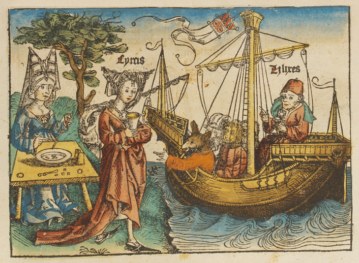
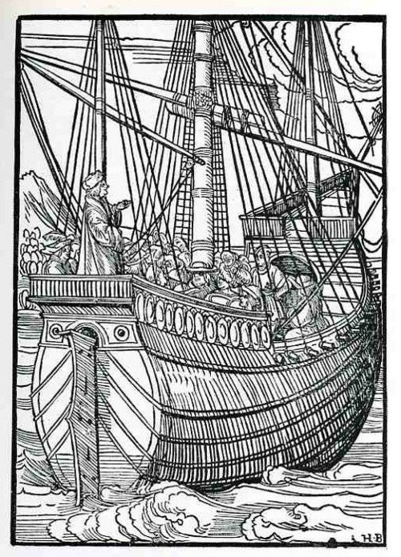
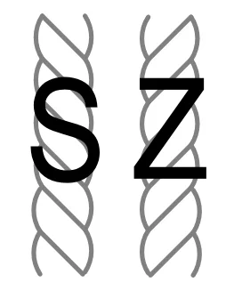
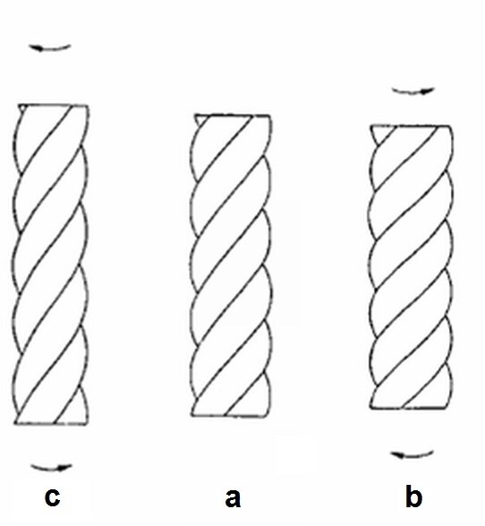
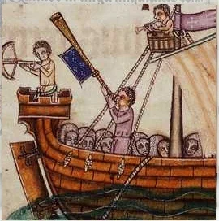
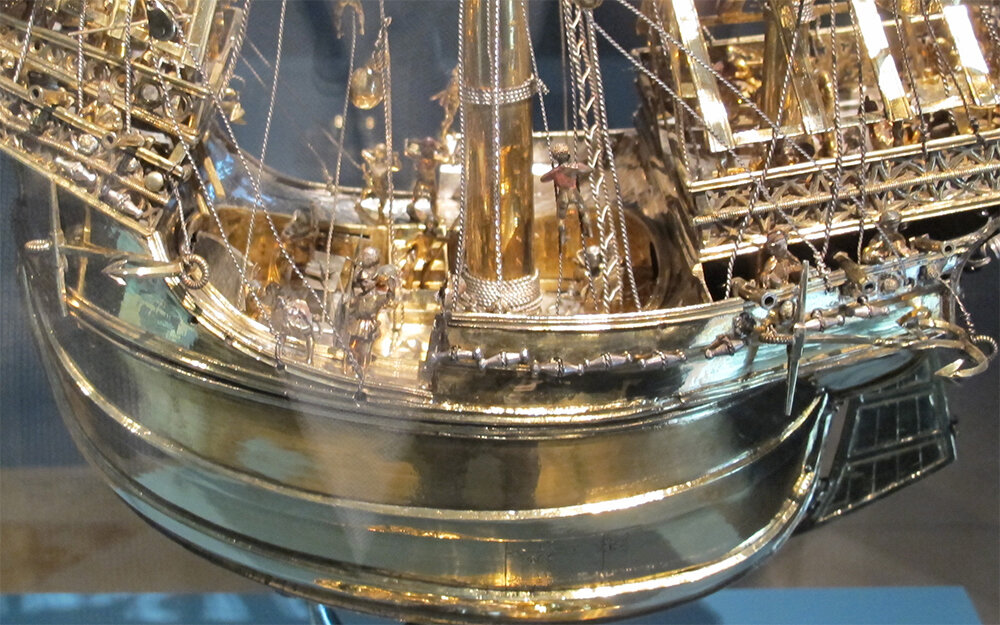
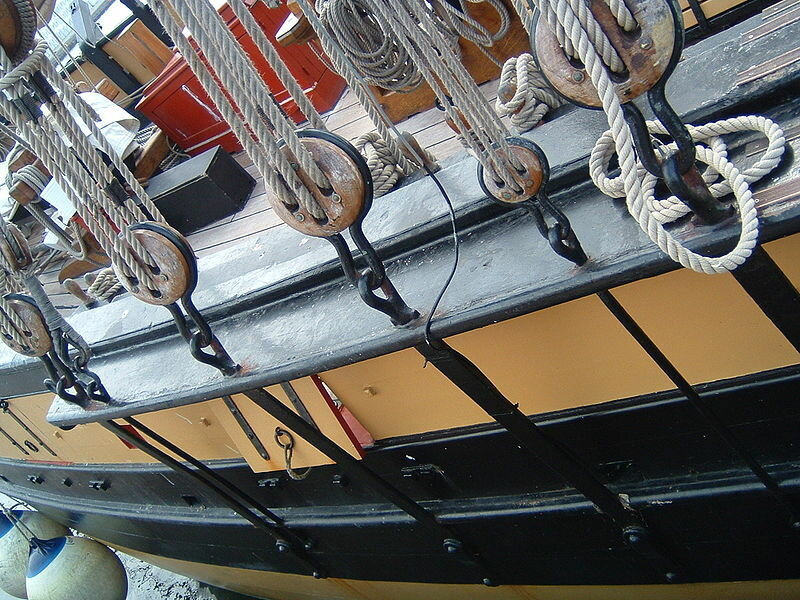
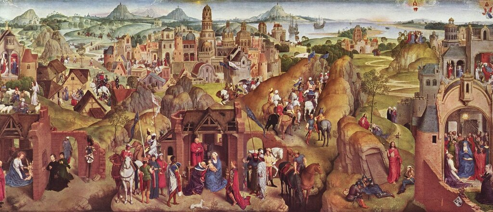
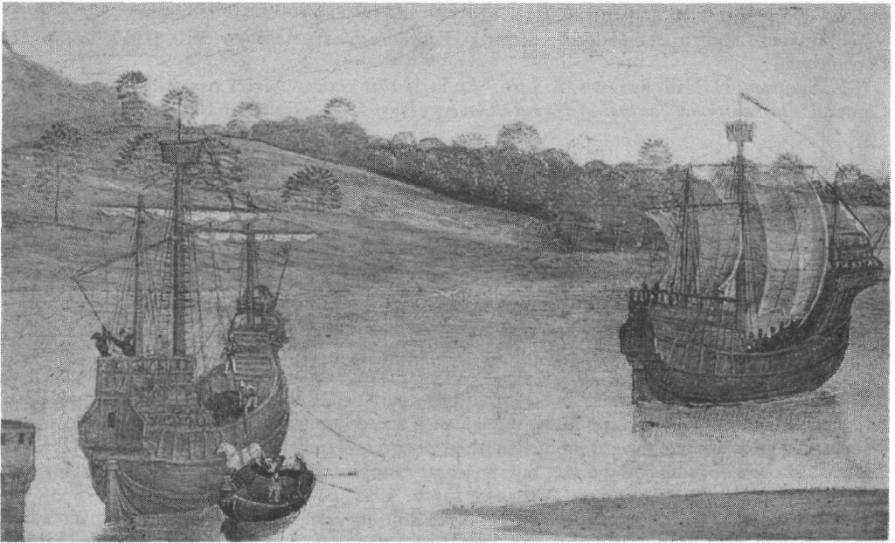

Появление широкого горизонтального русленя на гравюре, которая, как полагают, относится к периоду свадьбы Карла Смелого и Маргариты Йоркской в 1468 году, с детальным изображением юферсов на нем – достаточно необычно. Ванты в тот период крепили в основном на палубе или непосредственно на бортах, а способы, которыми их набивали, распознать на имеющихся изображениях было невозможно (о набивании вант на галерах и связанных с этим процессом терминах можно прочитать в одном из наших прежних постов). Обычно художники ограничивались какими-то непонятными зигзагами. Одним из первых достоверно датируемых (1493 год) изображений горизонтального русленя является гравюра Михаэля Вольгемута «Улисс и Цирцея» в «Нюрнбергской хронике» Хартмана Шеделя.

Гравюра по дереву из Нюрнбергской хроники Шеделя ( Schedel'schen Weltchronik), лист 41 recto
Но и на ней устройство для набивания вант – это лишь какие-то зигзаги вокруг снастей.
Необычность изображения фламандской каракки подкреплена отличием стиля этой гравюры от стиля других сохранившихся работ Мастера WA: изображение каракки никак не соотносится с периодом 1468 года, а больше соответствует стилю последних работ Мастера, приходящихся на 1485-1490-е годы. Возникшую проблему можно разрешить, предположив, что оригинальное изображение, изготовленное к свадьбе, было переделано в более поздние годы. Если еще раз взглянуть на увеличенное изображение каракки в районе крепления вант

то можно рассмотреть следы удаленного фрагмента изображения между грузовым портом в борту каракки и русленем над ним.Частично удаленная деталь видимо представляла собой грузовой порт, который был расположен выше и ближе к корме, чем порт на окончательном изображении. Перемещение порта на новое место можно легко объяснить. Погрузка тяжелых предметов через грузовой люк в борту зачастую осуществлялась с помощью талей на грота-рее, которая использовалась как грузовая стрела. Широкий руслень, как он изображен на гравюре, расположенный сразу же над старым изображением порта, делал погрузку через этот порт невозможным. Видимо, руслень является более поздним дополнением на гравюре, и вместе с ним были внесены изменения и в расположение грузового порта.
Теперь о самом способе крепления вант. Рассмотрим вкратце его эволюцию. Увеличение размеров парусных кораблей и рост в связи с этим сил натяжения стоячего такелажа требовали новых способов набивания вант. Всего можно отметить три таких способа. Первый был подобен методу, который используется при натягивании струн музыкальных инструментов. Концы вант наматывали на колышки (подобно колкам на скрипке). Натяжение снастей осуществлялось с помощью барашков, прикрепленных на этих штифтах, что также очень смахивает на прием настройки струнных инструментов. Хорошую иллюстрацию к этому варианту можно увидеть на гравюре Ганса Буркмайра (1511 год), находящейся в книге комментариев страсбургского проповедника Гайлера фон Кайзерсберга к поэме Себастьяна Бранта «Корабль дураков» .

Таким образом, в этом случае натяжение вант осуществлялось с помощью своеобразного ворота, небольшого брашпиля, снабженного, как полагают некоторые исследователи (H. H. Brindly, 1913), храповым механизмом (храповик с собачкой). Впрочем, нельзя исключать. что штифты удерживались в необходимом положении с помощью обычного фрикциона, что было более естественным в ту эпоху. Следует отметить, что других изображений подобного способа натяжения вант не найдено, поэтому выдвинута гипотеза, что изображение воскрешает давно забытый, возможно, исторически первый, способ.
Другим возможным способом набивания вант являлся способ закрутки снасти. Для понимания его сути рассмотрим вантовые тросы, которые существовали в то время. В принципиальном плане существуют два типа витых тросов: левого спуска и правого спуска. В 1973 году для обозначения этих двух типов навивки троса даже был введен особый международный стандарт ISO 2:

Прописной латинской буквой S обозначались тросы левого спуска, а прописной Z – правого. Эти буквы были выбраны потому, что направление линии в их средней части соответствует направлению пряди в соответствующем тросе. Для нас удобнее, думаю, будет другое правило: если смотреть вдоль троса, то для троса левого спуска прядь, удаляясь от наблюдателя, идет в левом направлении, а для правого, соответственно, в правом. (Для знатоков нарезного оружия здесь прямая аналогия с определением направления нарезки ствола: правого – «слева, вверх, направо» (исторически это Россия, США и др.) и левого (Англия, Франция и пр.)) Тросы правого спуска наиболее распространены, и, как правило, именно они использовались для изготовления вант.

Если трос правого спуска (a) «закручивать» против часовой стрелки (b), то он становится короче, натяжение ванты возрастает, если по часовой стрелке (c) – трос удлиняется. Это свойство витых тросов использовалось для набивки вант.
К нижнему концу ванты, прошедшему через отверстие в борту, прикрепляли клеванту (о клевантах мы уже писали). Вращая клеванту в желаемом направлении, увеличивали или уменьшали натяжение вант.
Существуют изображения и даже модели парусных кораблей с подобным способом набивания вант. К примеру, в иллюминированной Псалтыри Латтрелла (1320–1340) на миниатюре к псалму 89 как раз показаны ванты с клевантами.

Luttrell Psalter (British Library), фрагмент миниатюры к псалму 89
Ну и конечно, замечательная серебряная модель каракки из Нюрнберга, фотография которой приведена в начале поста, а увеличенное изображение приводится ниже.

Кольхаузен (H. Kohlhausen. Nürnberger Goldschmiedekunst des Mittelalters undder Durerzeit 1240 bis 1540, Berlin, 1968) делает предположение, что возможный автор модели Альбрехт Дюрер-старший в качестве образца для нее взял гравюру фламандской каракки Мастера WA. Однако имеется одно препятствие: на модели Дюрера использован способ крепления вант с помощью клевантов, а на фламандской каракке, как мы видели, использованы юферсы и руслень.
И, наконец, рассмотрим третий способ натяжения вант – с помощью блоков. Первоначально ванты набивали с помощью одношкивного блока, дающего, как известно, двукратный выигрыш в силе. Дальнейшее усовершенствование этого способа привело к замене простого блока парой юферсов – бесшкивных блоков с тремя сквозными отверстиями в щеках, расположенными в виде треугольника, через которые проводят лопари талрепа (см. приведенное выше увеличенное изображение фламандской каракки в районе вант). Новая конструкция теоретически позволяла добиться пятикратного выигрыша в силе.

Исторически введение юферсов по времени совпадало с введением руслений для их крепления: усиление натяжения вант в новом способе их крепления грозило отрывом обшивки борта, поэтому крепились блоки уже не за борт, а на специальной горизонтальной доске – руслене. Первоначально эта доска крепилась к борту пластью, вертикально. Такой способ крепления мы видим, например, на каракке с картины Ганса Мемлинга «Семь радостей Марии»

Ганс Мемлинг (Hans Memling) Семь радостей Марии (1480). Старая мюнхенская Пинакотека
Художник в пределах одной огромной доски изобразил восемнадцать разных эпизодов из жизни Марии и Христа. Нас интересует сцена на заднем фоне, изображающая погрузку волхвов и их лошадей на корабли (на обратном пути из Святой Земли после поклонения Христу).
Разрешения имеющихся репродукций с этой картины не хватает, чтобы в деталях разглядеть корабли на горизонте. Приведем поэтому иллюстрацию из статьи A. W. Sleeswyk The Carrack of Hans Memling (1987)

Каракки волхвов (1480)
Хотя и на этом изображении мы особенно не различаем интересующих нас деталей, предлагается поверить на слово, что на левом корабле крепление вант осуществляется через юферсы, которые укреплены на доске, плоскостью своей прижатой к бору корабля.
Продолжим эту тему в следующий раз.